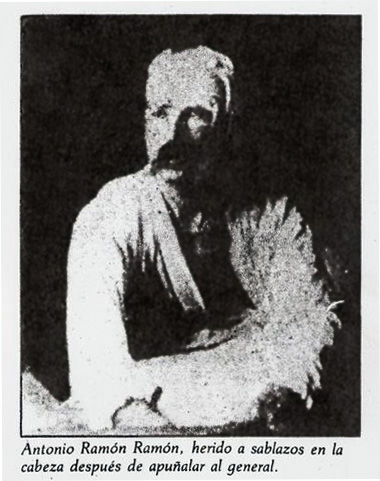

Hace casi un año asumió el gobierno Gabriel Boric, militante de Convergencia Social, un partido miembro de la coalición Frente Amplio, caracterizada por una postura socialdemócrata de corte neoliberal y tendencia progresista. Mientras algunos sectores de la centroizquierda, bastante extendida en la mayoría de las casas de estudio de la educación superior, siendo las más representativas de este tipo de posturas y manifestaciones la Universidad de Chile, La Universidad Diego Portales, la Universidad Alberto Hurtado, la Academia de Humanismo Cristiano, entre otras. Popularmente, e inserto en la cultura de los memes y redes sociales, este tipo de discursos ha sido agrupado bajo el concepto de ñuñoíno.
Sin embargo, siendo las universidades espacios para el desarrollo y proliferación de discursos políticos e intelectuales diversos, prevalecen propuestas políticas menos extendidas que buscan generar espacios de diálogo e incluso de propaganda ante un escenario nacional de polarización, corrección política, duopolio partidario y marginalización del disenso.
Particularmente, nos enfrentamos a un llamado explícito a la acción, un imperativo que llama a prácticas políticas alternativas de antecedentes decimonónicos que buscan encontrar su espacio en la política en un nivel no oficializado, legalizado ni comunicacionalmente aceptado. Es sencillo vislumbrar el tipo de conversaciones que este tipo de escritos inspiraría en espacios de conversación oficiales; se hablaría de resentimiento, ignorancia, violencia y barbarie. En Pizarra de canallas, sin embargo, nos adentraremos en los antecedentes políticos, históricos y filosóficos que sustentan este tipo de llamados, con la intención de presentar este tipo de propuesta en un espacio libre.
 En 1840 en Francia, Pierre-Joseph Proudhon publica uno de los textos fundamentales del anarquismo moderno, ¿Qué es la propiedad?. Allí sienta las bases de un pensamiento revolucionario que sentó las bases para el movimiento anarquista histórico en Europa, analizando el concepto mismo de la propiedad y planteando su cita más célebre, una máxima anarquista; que, en esencia, la propiedad es el robo.
“Ni el trabajo, ni la ocupación, ni la ley pueden engendrar la propiedad, pues ésta es un efecto sin causa”, comienza el planteamiento de Proudhon, además de declararse “no como un instigador de sediciones, sino solo anticípandome algunos días a la Historia”. Efectivamente, su estudio aparece ocho años antes de la instauración de la Segunda República Francesa (y casi treinta años antes de El Capital, de Marx), constitución con la que definitivamente se abolió la esclavitud, se implantó el sufragio (masculino) y el derecho al trabajo, en un período inmediatamente posterior a la Revolución, en el que la República era un experimento en permanente deconstrucción. Así, las ideas políticas que apuntan a la abolición de la propiedad, específicamente los ideales anarquistas, se han desarrollado en paralelo a los procesos republicanos y democráticos, como una alternativa política permanente.
En 1840 en Francia, Pierre-Joseph Proudhon publica uno de los textos fundamentales del anarquismo moderno, ¿Qué es la propiedad?. Allí sienta las bases de un pensamiento revolucionario que sentó las bases para el movimiento anarquista histórico en Europa, analizando el concepto mismo de la propiedad y planteando su cita más célebre, una máxima anarquista; que, en esencia, la propiedad es el robo.
“Ni el trabajo, ni la ocupación, ni la ley pueden engendrar la propiedad, pues ésta es un efecto sin causa”, comienza el planteamiento de Proudhon, además de declararse “no como un instigador de sediciones, sino solo anticípandome algunos días a la Historia”. Efectivamente, su estudio aparece ocho años antes de la instauración de la Segunda República Francesa (y casi treinta años antes de El Capital, de Marx), constitución con la que definitivamente se abolió la esclavitud, se implantó el sufragio (masculino) y el derecho al trabajo, en un período inmediatamente posterior a la Revolución, en el que la República era un experimento en permanente deconstrucción. Así, las ideas políticas que apuntan a la abolición de la propiedad, específicamente los ideales anarquistas, se han desarrollado en paralelo a los procesos republicanos y democráticos, como una alternativa política permanente.
Décadas más tarde, comenzó a surgir el movimiento expropiador, inspirados por las ideas de Proudhon y de Max Stirner (acerca del egoísmo), los anarquistas expropiadores utilizaban el robo como una herramienta para financiar sus agrupaciones, y también sus vidas individuales. La expropiación pasó a ser, en algunos casos un modo de vida, de allí que el anarquismo expropiador pueda llamarse en ocasiones anarquismo ilegalista.
Mientras, en Italia, Malatesta teorizaba acerca de la propaganda por el hecho, concepto según el cual los actos de robo, atentado e incluso homicidio podían servir como acto propagandístico para incitar a las masas a la revolución, en Lyon, Francia, Jules Bonnot formaba su banda de criminales dedicados precisamente a ello. Se cerraba así la etapa del anarquismo clásico, durante la cual Kropotkin, Bakunin, Proudhon y el propio Malatesta sentaron las bases éticas y políticas de los movimientos e ideas que surgirían luego en Europa y América.
En 1936, el Frente Popular ganó en España las elecciones generales, tomando democráticamente control del gobierno en febrero de ese año, presidido por Manuel Azaña. Cinco meses después, un golpe militar de Estado disolvió el gobierno enfrentándose a la respuesta anarquista, un esfuerzo revolucionario que se extendió hasta 1939, año de la derrota en el que se instaló la dictadura semifascista de Francisco Franco.
Los años comprendidos entre 1936 y 1939 son ampliamente mencionados como una Guerra Civil, sin embargo, el período es también considerado como un alzamiento anarquista frente a la dictadura. Se trató, sin duda, de una de las empresas anarquistas más grandes de la historia.
La historia del anarquismo en Chile no cuenta con escenas de estatura épica. Desde la formación de organizaciones de obreros tipográficos en Valparaíso, hasta la creación de la CUT (que contó con participación de agrupaciones anarquistas en retirada), probablemente el episodio más dramático es la venganza del español Antonio Ramón Ramón frente al asesinato de su medio hermano, Manuel Vaca, en la Matanza de Santa María de Iquique, con quien fueron compañeros entrañables.
En 1901 Ramón Ramón se había instalado en Argentina. Vaca, por su parte, había llegado a Chile a trabajar en la industria del salitre. Durante los años siguientes, ambos hermanos se contagiaron de los ideales anarquistas en ambos lados de la cordillera. En 1907, Antonio se enteró por la prensa Argentina de la masacre de la Escuela de Santa María y decidió viajar a ver a su hermano. En Iquique se enteró de que Manuel había sido una de las víctimas de la matanza. Siete años más tarde, el 14 de diciembre de 1914, el general Roberto Silva Renard caminaba a su oficina por la calle Viel, cerca del Parque Cousiño, cuando Ramón Ramón lo apuñaló varias veces en la espalda, sin conseguir asesinarlo.